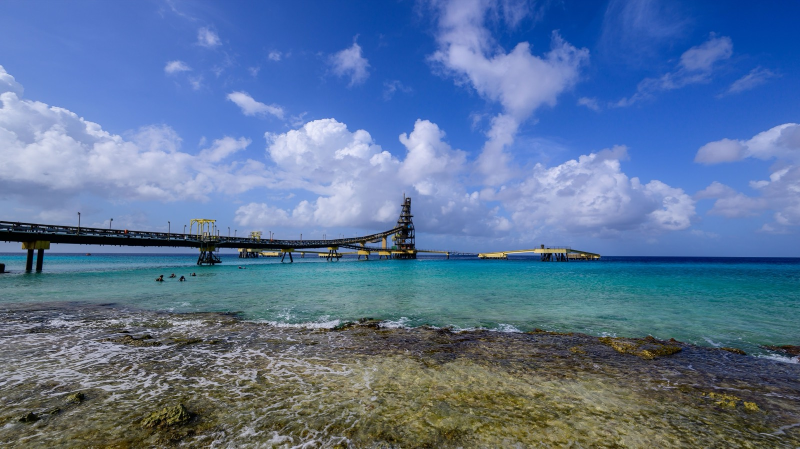

Moving to the Dutch islands
Bonaire, Saba, and Sint Eustatius are special municipalities of the Netherlands, Dutch law and structure, the US dollar in your pocket, near-zero crime, and a residency door that swings open unusually wide for Americans. Here's how the three compare.

Here's the twist that surprises almost everyone: Bonaire, Saba, and Sint Eustatius pay for their groceries in US dollars, not euros. Even though they're part of the Netherlands. Since 2010 the three have been “special municipalities” of the Dutch kingdom, run on Dutch law and standards but sitting outside the EU and the eurozone. The result is an unusual package: European-grade governance and a stable currency, wrapped around tiny, exceptionally safe islands and some of the best diving on earth. And for Americans specifically, an old treaty makes the residency door easier to open here than almost anywhere in the Caribbean. This guide covers all three together.
At a glance
- These are the Netherlands, not a Dutch territory. Bonaire, Saba and Sint Eustatius are special municipalities of the Netherlands itself, with Dutch law, Dutch institutions and Dutch passports.
- But they are outside the EU and the eurozone, holding Overseas Country and Territory status. That is why they run on the US dollar.
- Tax tops out near 35.4% with a large tax-free band beneath it, materially lighter than Aruba at 52% or Curaçao in the 40s.
- Americans have an unusual advantage through the Dutch-American Friendship Treaty, which opens a self-employment route unavailable to most other nationalities.
- Only Bonaire sits outside the hurricane belt. Saba and Sint Eustatius are squarely inside it, which is the single biggest practical difference between the three.
Are Bonaire, Saba and Sint Eustatius part of the EU?
No, and this catches people out. They are integral parts of the Netherlands as special municipalities (often called the BES or Caribbean Netherlands), but they hold “Overseas Country and Territory” status, which places them outside the European Union and the eurozone. That's why they use the US dollar rather than the euro. Dutch law, Dutch institutions, and Dutch passports apply; EU free-movement rights and EU market rules mostly do not. In practice you get Dutch structure and safety with a dollar economy.
How do you get residency: and the DAFT advantage
Residency is handled by the IND Caribisch Nederland, the Dutch immigration service's Caribbean branch, and the usual routes are employment (an employer sponsors the permit), self-employment or investment, a retiree route for those with sufficient pension income, and family reunification. Unlike the mainland Netherlands, these islands are not full EU free-movement zones, so even some EU nationals must meet local admission conditions.
The standout route for Americans is the Dutch-American Friendship Treaty (DAFT): US citizens can obtain residence by establishing a business with a relatively modest investment (commonly cited around US$4,500 held in the business), a far lower bar than the six-figure investment programs elsewhere in the Caribbean. That single treaty is the main reason Bonaire in particular has a visible American expat and dive-operator community.
Tax on the BES islands
The Caribbean Netherlands does not use the European Dutch tax system. It runs a simplified local regime, and for most newcomers it is meaningfully lighter than the neighbouring Dutch islands.
| Item | Bonaire, Saba & Sint Eustatius |
|---|---|
| Personal income tax | Progressive, roughly 0% to 35.4%, with a substantial tax-free band before anything is due |
| Basis | Residents taxed on worldwide income |
| Profit tax | None |
| General expenditure tax (ABB) | Around 6% to 8%, comparable to a sales tax |
| Currency | US dollar, so no conversion risk on US income |
| Mortgage interest, main residence | Deductible up to US$15,364 a year |
| Insurance and maintenance | Deductible up to US$1,676 or 2% of property value |
Two things make this attractive relative to the alternatives. The absence of a profit tax is unusual and matters if you will run a business here. And dollar denomination removes a whole category of risk for anyone drawing a US pension or salary, which neither Aruba nor Curaçao offers.
The 2026 bracket change
As part of a purchasing-power package, the government proposed changes to the first two income and wage tax brackets effective 1 January 2026, aimed at lower and middle incomes. It reduces the first-bracket rate while raising the second, so the effect on you depends entirely on where your income falls. Published sources describe the change without fully enumerating the new bands. Confirm the current brackets with the Belastingdienst Caribisch Nederland before budgeting.
US citizens still file with the IRS on worldwide income. A lower local rate does not remove that obligation, though foreign tax credits may offset part of it.
The three islands at a glance
| Island | Population | Character | Est. single budget /mo |
|---|---|---|---|
| Bonaire | ~31,000 | Flat, arid, outside the hurricane belt. The region's shore-diving capital, with the most developed expat scene of the three | ~US$3,600 incl. rent |
| Saba | ~2,000 | Five square miles of green volcano, Mount Scenery, a famous tiny airstrip, a medical school, near-zero crime | ~US$3,200 incl. rent |
| Sint Eustatius | ~3,200 | Quiet and historic ("The Golden Rock"): The Quill volcano, an oil terminal, sleepy day-to-day | ~US$2,850 incl. rent |
Bonaire. Diving, and the easiest landing
Flat, dry, and blessedly outside the main hurricane belt, Bonaire is the practical choice: the biggest of the three, with the most services, the Fundashon Mariadal hospital, a real expat and retiree community, and world-class shore diving along a protected marine park. Kralendijk is the walkable capital. If you're an American using DAFT, this is usually where you land.
Saba, the tiny, vertical one
"The Unspoiled Queen" is barely five square miles of steep green rising to Mount Scenery, the highest point in the entire Dutch kingdom. It has the world's shortest commercial runway, a well-known medical university, superb diving, and a community of roughly two thousand where crime is essentially nonexistent. Life is close-knit and quiet by definition.
Sint Eustatius: the sleepy historian
Statia was once one of the busiest trading ports in the Americas; today it's a hushed island of a few thousand around the dormant Quill volcano, with an oil terminal as its main employer. It's for people who want stillness (diving, hiking, and little else) rather than services or a scene.
What does it cost, and what's daily life like?
Living costs are high for the Caribbean, driven by imports and the expense of shipping to small islands: cost-of-living estimates put a single person's monthly budget (including rent) near US$3,600 on Bonaire, around US$3,200 on Saba, and roughly US$2,850 on Sint Eustatius. Utilities are pricey and power can be intermittent, so a backup generator is a common precaution. Healthcare is solid on Bonaire (Fundashon Mariadal); Saba and Statia run smaller clinics and rely on medical evacuation for serious cases. Across all three, crime is low. The tiny communities police themselves.
So which Dutch island is right for you?
Bonaire is the answer for almost everyone starting out: it has the services, the hospital, the diving, and (for Americans) the DAFT route, all in a hurricane-sheltered, dollar-based Dutch package. Choose Saba or Sint Eustatius only if you actively want to disappear into a two-to-three-thousand-person community where nothing much happens and that's the appeal. All three give you Dutch governance and the US dollar; what differs is how much solitude you're signing up for.
Dutch structure, US dollars, and a small island.
Bonaire is one of the more sensible propositions in the Caribbean: Dutch institutions, dollar denomination, outside the storm track, and a lighter tax rate than its neighbours. The trade-off is scale. Around 25,000 people, one hospital, and a shipping lane for everything you buy. If you want the same stability with a continent attached, Panama and Costa Rica are worth putting side by side with it before you commit.
Frequently asked questions
Are the Dutch Caribbean islands part of the EU?
No. Bonaire, Saba, and Sint Eustatius are special municipalities of the Netherlands but hold Overseas Country and Territory status, which places them outside the European Union and the eurozone. They use the US dollar and run on Dutch law, but EU free-movement rights do not fully apply.
Can Americans move to Bonaire easily?
More easily than to most of the Caribbean. The Dutch-American Friendship Treaty (DAFT) lets US citizens gain residence by starting a business with a modest investment (often cited around US$4,500), rather than the six-figure investments many other islands require. This is a major reason Bonaire has an established American expat community.
What currency do Bonaire, Saba and Sint Eustatius use?
The US dollar, not the euro. Despite being part of the Netherlands, the three islands adopted the US dollar in 2010 because of their Overseas Country and Territory status outside the eurozone.
Is Bonaire safe from hurricanes?
Bonaire sits outside the main Atlantic hurricane belt, along with Aruba and Curaçao, so it is far less exposed than the northern Caribbean islands: one reason it's popular with retirees and divers. Saba and Sint Eustatius, further north, carry more hurricane risk.
Sources & verification
Figures in this guide were checked against primary and authoritative sources on 27 July 2026. Immigration, tax, and cost figures change. Always confirm the current rules with the official body or a licensed professional before acting.
- IND Caribisch Nederland, residence-permit routes for the Caribbean Netherlands
- Rijksdienst Caribisch Nederland (RCN): official Dutch government service for Bonaire, Saba, and St Eustatius
- US Department of State. Netherlands (DAFT), Dutch-American Friendship Treaty background